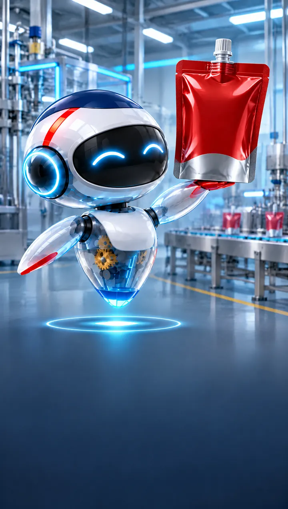
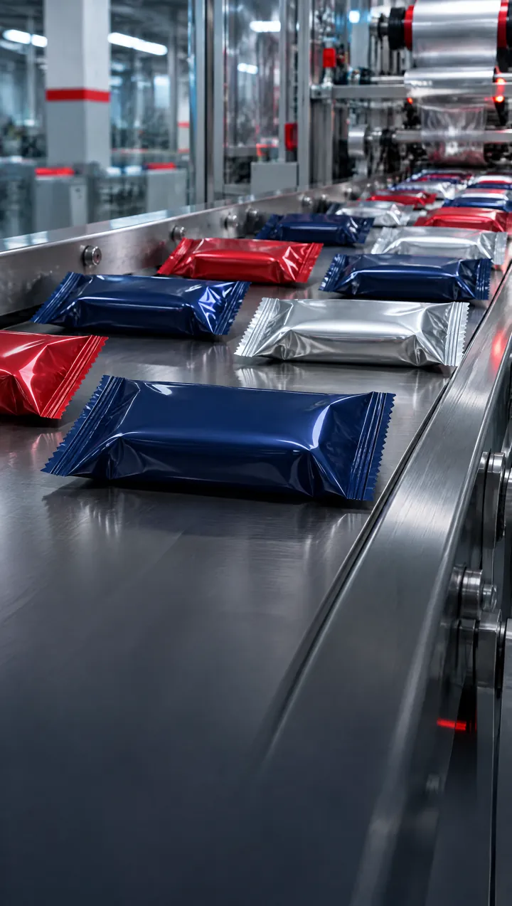
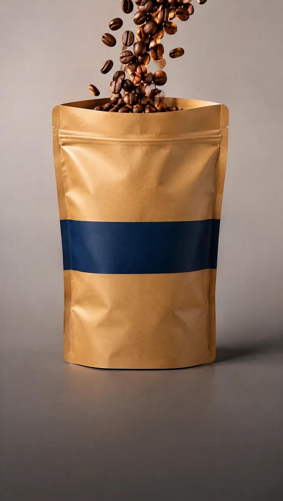
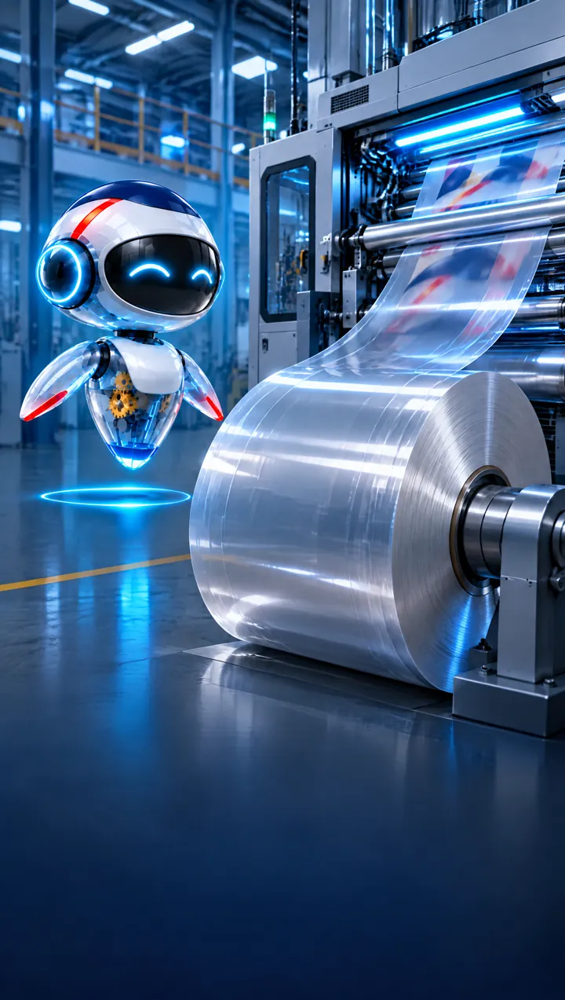
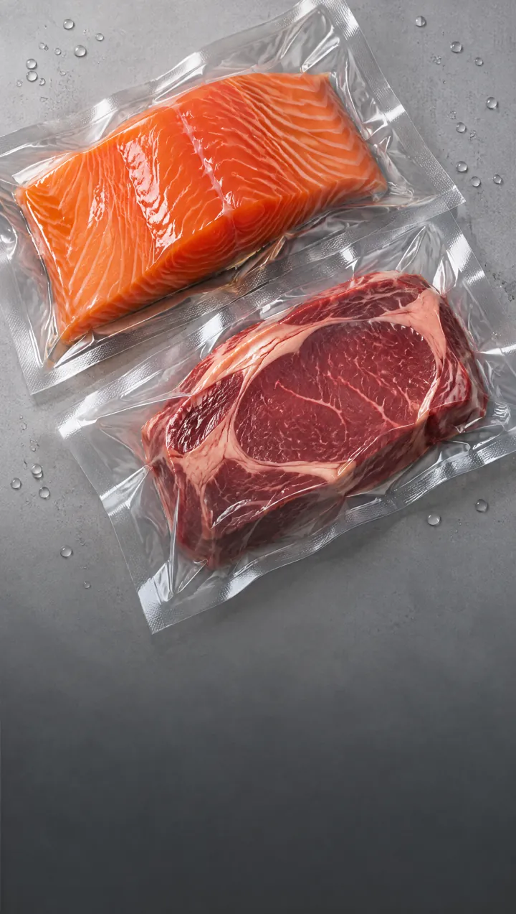
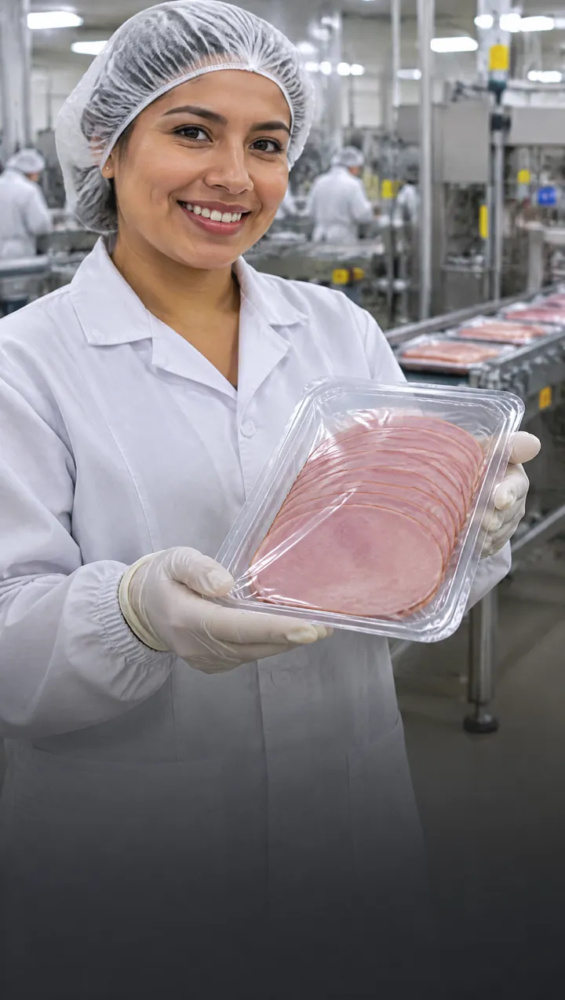

TIP 01¿Líquidos, salsas o polvos?
UsaDoy pack
Se mantiene de pie, con boquilla o zipper para servir y volver a cerrar.
Ver en el catálogo
UN EMPAQUE PARA CADA SEGMENTO
Bolsas al vacío, doypack, flow pack, laminados y rollos para tu línea de productos.
¿No sabes cuál elegir? Te ayudamos con tips para cada producto.
TIPS PRESSERVAC
Empieza por tu producto. Desliza las tarjetas y elige la que se parezca a lo que vas a empacar.

TIP 01¿Líquidos, salsas o polvos?
Se mantiene de pie, con boquilla o zipper para servir y volver a cerrar.
Ver en el catálogo
TIP 02¿Snacks, galletas o barras?
Sellado continuo a alta velocidad, ideal para porciones individuales.
Ver en el catálogo
TIP 03¿Café, granos o productos secos?
Alta barrera contra humedad y oxígeno para conservar aroma y frescura.
Ver en el catálogo
TIP 04¿Empacas en máquina automática?
Película en bobina lista para tu empacadora vertical u horizontal.
Ver en el catálogo
TIP 05¿Carnes, quesos o embutidos frescos?
Retira el aire y prolonga la vida útil de productos frescos.
Ver en el catálogo
TIP 06¿Porciones listas para exhibir?
Bandeja con tapa sellada que exhibe el producto y lo protege.
Ver en el catálogoEXPERIENCIA 3D
Desliza hacia abajo: la cámara te lleva capa por capa. Al final, personaliza tu bolsa.
Estructura de ejemplo. Cada empaque se diseña con las capas y calibres que necesita tu producto.
Personaliza tu doypack
Cotizar este doypack
Empaques que fabricamos
Un formato que se mantiene de pie. Bolsa con fuelle de fondo, con ventajas en la exhibición.
Ir al catálogoZipper o válvula
Empaques que fabricamos
Bolsa con fuelles laterales, para más capacidad de contenido y estabilidad.
Ir al catálogo
Café, granos y productos sólidos
Empaques que fabricamos
Propiedades físicas y mecánicas que se adaptan al diseño y al producto que vas a envasar.
Ir al catálogo
Humedad, gases, grasas y luz ultravioleta
Empaques que fabricamos
Para procesos de empaquetado continuo.
Ir al catálogo
Salsas, snacks y granos
Empaques que fabricamos
Película coextruida multicapa con barrera al oxígeno y al vapor de agua.
Ir al catálogo
Térmicos, refrigeración o congelación

Transparentes o impresas
SEGMENTOS DE MERCADO
Imágenes ilustrativas. Consulta referencias, características y disponibilidad con nuestro equipo.

Escuchamos lo que necesitas empacar para orientarte entre las opciones de nuestro portafolio. Conoce nuestros espacios en Bogotá y conversemos sobre tu proyecto.
Conócenos ↗Cuéntanos qué necesitas empacar.
Consulta formatos y presentaciones.
Envíanos medidas, cantidad y referencia.
Contacta a nuestro equipo comercial.

Cuéntanos qué producto tienes en mente.
Nosotros te ayudamos con el siguiente paso.